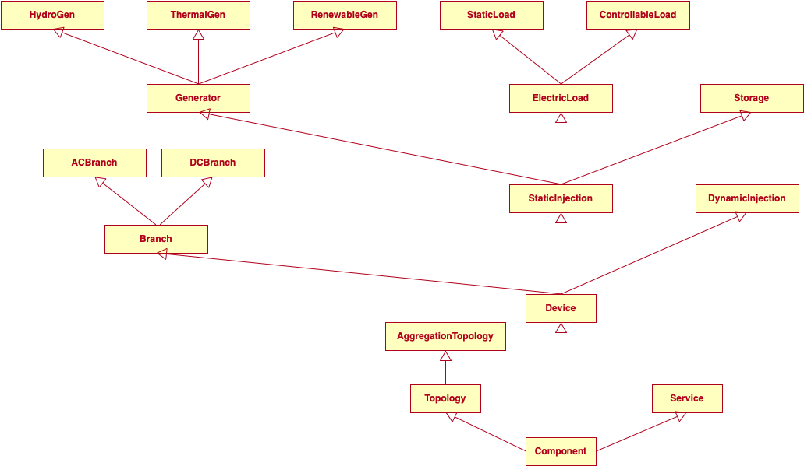

Type Structure
PowerSystems.jl provides a type hierarchy to contain power system data.
Types in PowerSystems
In PowerSystems.jl, data that describes infrastructure components is held in structs. For example, an ACBus is a struct with the following parameters to describe a bus on an AC network:
mutable struct ACBus number::Int64 name::String bustype::Union{Nothing, ACBusTypes} angle::Union{Nothing, Float64} magnitude::Union{Nothing, Float64} voltage_limits::Union{Nothing, @NamedTuple{min::Float64, max::Float64}} base_voltage::Union{Nothing, Float64} area::Union{Nothing, Area} load_zone::Union{Nothing, LoadZone} ext::Dict{String, Any} internal::InfrastructureSystems.InfrastructureSystemsInternal end
Type Hierarchy
PowerSystems is intended to organize data by the behavior of the devices that the data represents. A type hierarchy has been defined with several levels of abstract types starting with InfrastructureSystemsType. There are a bunch of subtypes of InfrastructureSystemsType, but the important ones to know about are:
System: overarchingstructthat collects all of theComponentsComponent: includes all elements of power system dataTopology: includes non physical elements describing network connectivityService: includes descriptions of system requirements (other than energy balance)Device: includes descriptions of all the physical devices in a power system
InfrastructureSystems.DeviceParameter: includes structs that hold data describing the
dynamic, or economic capabilities of Device.
TimeSeriesData: Includes all time series typesForecast: includes structs to define time series of forecasted data where multiple
values can represent each time stamp
StaticTimeSeries: includes structs to define time series with a single value for each
time stamp
The abstract hierarchy enables categorization of the devices by their operational characteristics and modeling requirements.
For instance, generation is classified by the distinctive data requirements for modeling in three categories: ThermalGen, RenewableGen, and HydroGen.
PowerSystems.jl has a category Topology of topological components (e.g., ACBus, Arc), separate from the physical components.
The hierarchy also includes components absent in standard data models, such as services. The services category includes reserves, transfers and AGC. The power of PowerSystems.jl lies in providing the abstraction without an implicit mathematical representation of the component.
As a result of this design, developers can define model logic entirely based on abstract types and create generic code to support modeling technologies that are not yet implemented in the package.
⠀